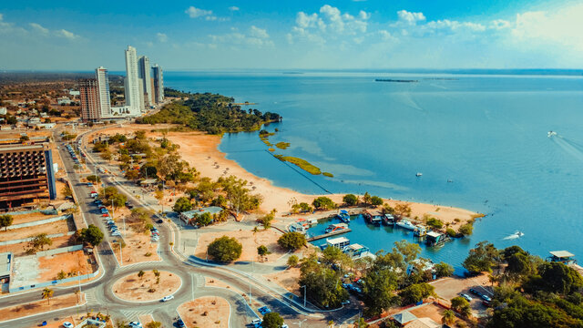

Tocantins é um estado localizado na região Norte do Brasil, criado em 1988, com Palmas como sua capital. É conhecido por suas paisagens de cerrado, rios e uma natureza bastante preservada. A economia de Tocantins é baseada na agricultura, especialmente na produção de soja, milho e algodão, além da pecuária. O estado também possui uma cultura rica, com festas tradicionais e manifestações indígenas.
